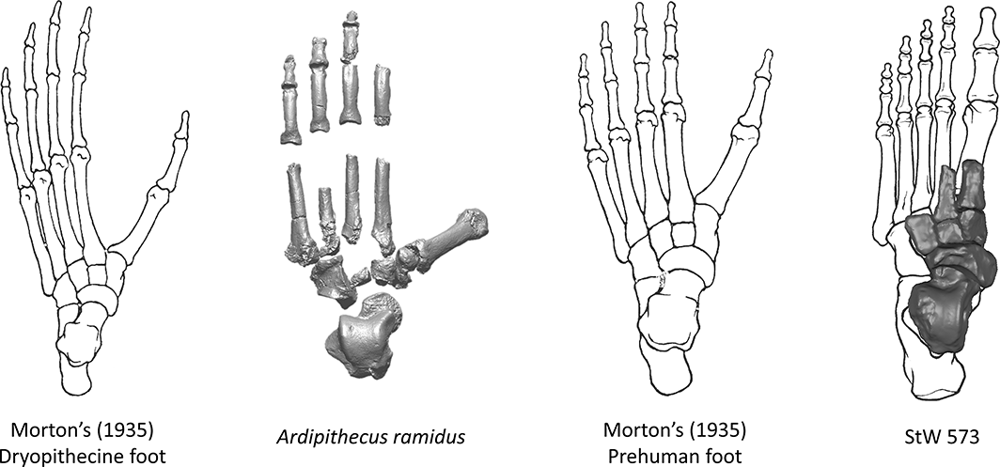

Foot Evolution
Stages
Great Ape-Like
Arboreal locomotion with some bipedalism
Intermediate
Effective bipedal walking with some arboreal
grasping adaptations
Human-Like
Enhanced long-distance walking and running,
with no prehensility